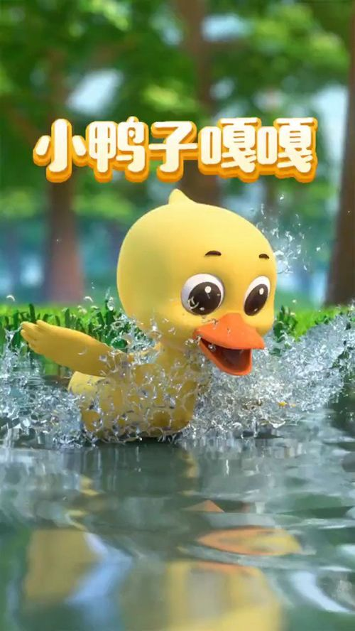
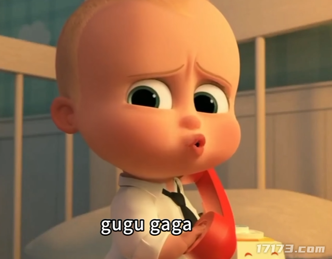

我搜到的「咕咕嘎嘎」和「DeepSeek 大肥鱼」候选
先确认参考，再按你选的方向画二次元版本

A · 小鸭子嘎嘎黄色小鸭、橙色嘴、水花，搜索结果里最接近“咕咕嘎嘎”的鸭子形象。
 B · 咕咕嘎嘎童谣儿歌里的鸡/鸭合唱，说明“咕咕嘎嘎”也常被当作鸭子/小鸡的拟声词。
B · 咕咕嘎嘎童谣儿歌里的鸡/鸭合唱，说明“咕咕嘎嘎”也常被当作鸭子/小鸡的拟声词。

C · gugu gaga 婴儿梗英文 gugu gaga 的婴儿梗图，和鸭子是两条不同的网络用法。
 D · DeepSeek 大肥鱼蓝色胖鲸、白肚皮、水花；我理解这就是“大肥鱼”的形象来源。
D · DeepSeek 大肥鱼蓝色胖鲸、白肚皮、水花；我理解这就是“大肥鱼”的形象来源。